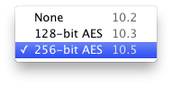

Encrypted images require a passphrase for access; the image contents are secure from anyone who doesn’t know the passphrase. DropDMG uses Apple’s implementation of the Advanced Encryption Standard (AES) algorithm. Two different strengths of encryption are available:

Click the Set Passphrase… button to choose the passphrase that you want to use. To make sure that you’ve typed what you meant to type, you must enter the same passphrase twice.
You can click the Set Passphrase… and then Show Passphrase to verify that the passphrase is what you intended.
DropDMG stores the passphrase securely in the system keychain. You can use the Keychain Access application to control whether the keychain password must be entered before creating an encrypted disk image or viewing the passphrase in DropDMG. If you prefer DropDMG to prompt you for a passphrase each time you create a disk image, leave the passphrase blank.